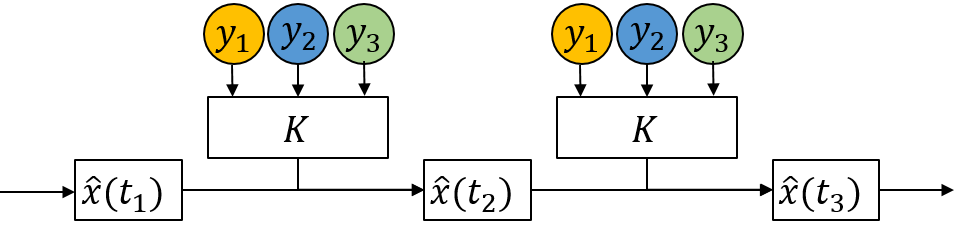
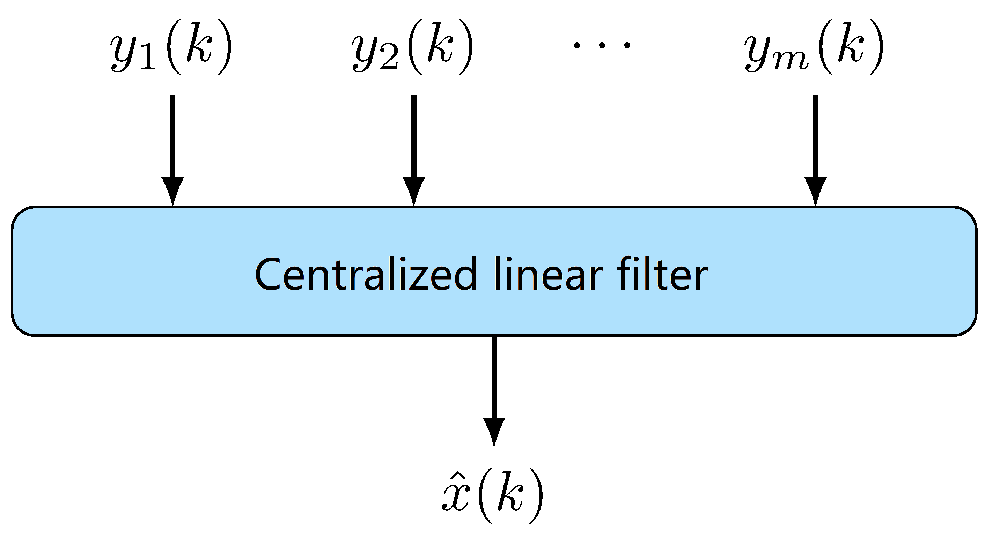
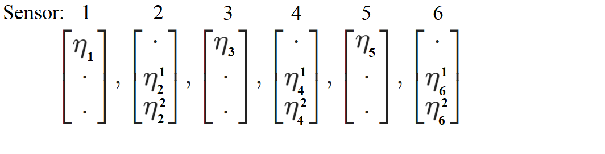
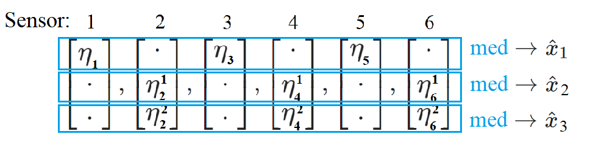
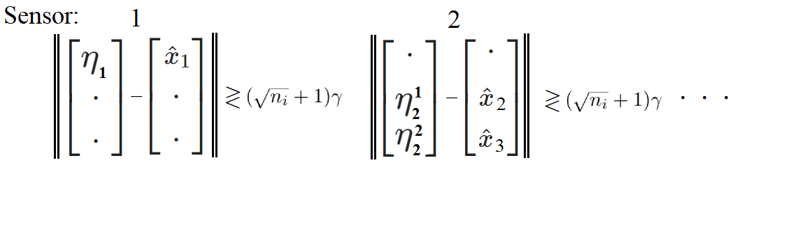

Secure State Estimation against Sparse Attacks on a Time-varying Set of Sensors

Background and introduction
BACKGROUND: Security Problem of Estimation
Safety Critical Industries
- High safety requirements.
- More vulnerable System
- Modern control systems are becoming more open to the cyber-world.
- More complex threats on estimation algorithms.
Resilient Estimation
Resilient Estimation
Problem formulation
Problem Formulation
- System equation and measurement equation:
$$ x(k+1)=Ax(k)+w(k), $$
$$ y(k)=Cx(k)+v(k)+a(k), $$
where $x(k)\in{\color{var(--myred)}{\mathbb{R}^n}}$, and
- Measurement equation of sensor $i$:
$$ y_i(k)=C_ix(k)+v_i(k)+a_i(k). $$
- process noise $w(k)$ and measurement noise $v(k)$ are bounded: $\|w(k)\|_2\leq\mathcal{B}_w $, $\|v(k)\|_2\leq\mathcal{B}_v $.
- $(A,C)$ is observable. Note that $(A, C_i)$ is not necessarily observable.
$$ y(k)\triangleq \begin{bmatrix} y_1(k)\\ \vdots\\ y_m(k) \end{bmatrix}\in {\color{var(--myred)}\mathbb{R}^m}, C\triangleq \begin{bmatrix} C_1\\ \vdots\\ C_m \end{bmatrix}, a(k)\triangleq \begin{bmatrix} a_1(k)\\ \vdots\\ a_m(k) \end{bmatrix} $$
Time-varying Sparse Attack
Define the possible corrupted sensor set as $\mathcal{C}(k)\triangleq \text{supp}\left\{a(k)\right\}$. The attack is called a $p$-sparse attack if $|\mathcal{C}(k)| \leq p,\ \forall k$.Sparse Observability
System $(A,C)$ is $s$-sparse observable if system $(A,C_{\mathcal{I}\setminus\mathcal{S}})$ is observable for any set of sensors $\mathcal{S}$ with cardinality $|\mathcal{S}| = s$.
Analyzing why linear estimator is not secure
The following estimator gain $K$ can be obtained from robust control theory.
-
\(
\begin{align}
\hat{x}(k+1)&=(A-K C ) \hat{x}(k)+K y(k),\\
&=(A-K C ) \hat{x}(k)+\left[\begin{array}{c|c|c}K_1&\vdots&K_m \end{array}\right]\begin{bmatrix}y_1(k)\\ \vdots\\y_m(k)\end{bmatrix},\\
&=(A-K C ) \hat{x}(k)+\sum_{i=1}^m K_i y_i(k),
\end{align}
\)
-


$$
\hat{x}(k+1)=(A-KC)\hat{x}(k)+\sum_{i=1}^m K_i y_i(k).
$$
$$
\eta_i(k+1)=\Lambda_i\eta_i(k) + L_i y_i(k).
$$
Preliminaries on Local Observable Subspace Decomposition
Our idea:
construct local reduced order observer at each sensor and fuse them resiliently.Preliminaries on Local Observable Subspace Decomposition
Assumption 1
All the eigenvalues of matrix $A$ have geometric multiplicity 1.Theorem 1
If Assumption 1 holds, matrix $H_i$ defined as follows satisfy that for any $x\in\mathbb{O}$, $H'_i H_i x=x$ if $x\in\mathbb{O}_i$, and $H'_i H_i x=\mathbf{0}$ if $x\in\mathbb{O}\setminus\mathbb{O}_i$. \begin{align}\label{eq:defH} H_i = \begin{bmatrix} \mathbf{e}_{j_1}& \mathbf{e}_{j_2}& \cdots &\mathbf{e}_{j_{n_i}} \end{bmatrix}^\top \end{align} where $\{j_1,\cdots,j_{n_i}\}=\mathcal{Q}_i$ with $\mathcal{Q}_i\triangleq \{j=1,\cdots,n\ |\ O_i \mathbf{e}_j\neq \mathbf{0} \}.$ Moreover, $\tilde{A_i}\triangleq H_i A H'_i ,\ \tilde{C_i}\triangleq C_i H'_i, \text{ and } (\tilde{A_i},\tilde{C_i})$ is observableExample on Resilient Fusion
$$A=\begin{bmatrix}
\lambda_1 &0&0\\
0& \lambda_2 & 1\\
0&0&\lambda_2
\end{bmatrix}, \quad
C=\begin{bmatrix}
1 &0&0\\
0&1&0\\
1 &0&0\\
0&1&1\\
1 &0&0\\
0&0&1
\end{bmatrix}.$$
Construct 6 local observers :
$$\eta_1(k+1)=(\tilde{A}_1-L_1 \tilde{C}_1 )\eta_1(k)+L_1 y_1(k).$$
$$\vdots$$
$$\eta_6(k+1)=(\tilde{A}_6-L_6 \tilde{C}_6 )\eta_6(k)+L_6 y_6(k).$$
Fuse those subsystems by taking median:

Fuse those subsystems by taking median:

Secure Estimation Algorithm against static sparse attack
Lemma 1
$$[\hat{x}(k)]_j={\rm med}\left\{[H_i^\top \eta_i(k)]_j, j\in\mathcal{Q}_i\right\}$$
If the system is $2p$ sparse observable, then $\hat{x}(k)$ above has uniformly bounded error under static sparse attack where ${\rm supp} \{a(k)\}\subset \mathcal{C}$.
$$
\|\hat{x}(k)-x(k)\|_\infty\leq {\rm Constant}(\mathcal{B}_w,\mathcal{B}_v,A,C,L_i) $$
For time-varying attack
Since time-varying attack may deteriorate all local states $\eta_i(k)$, we need a detection and reset mechanism.
Secure Estimation Algorithm
Step 1: update local observer state.
$$\eta_i(k+1)=(\tilde{A}_i - L_i \tilde{C} ) \eta_i^+(k)+L_i y_i(k)$$
Secure Estimation Algorithm
Step 2: For each state entry, take median among all local states that can observe them.
Secure Estimation Algorithm
Step 3: Check compatibility of all those local estimates.

Main result on secure estimation (Theorem 2)
Assume the system is $2p$-sparse observable and the following two conditions hold:
(1)
$\sigma_{\max}\left(\tilde{A}_i-L_i\tilde{C}_i\right)\leq \frac{\gamma-\mathcal{B}_w- \|L_i\|_2\mathcal{B}_v }{(2\sqrt{n_i}+1)\gamma}$ with $\gamma\geq\mathcal{B}_w+ \|L_i\|_2\mathcal{B}_v$.
(2) The initial estimate satisfies $\|\hat{x}(0)-x(0)\|_\infty\leq \gamma$.
Then our algorithm provides a secure state estimate $\hat{x}$ in the sense that
$$\|\hat{x}(k)-x(k)\|_\infty \leq \gamma,\quad \forall k\in\mathbb{Z}^+.$$
And good sensors at time $k$ will not trigger the detector at time $k+1$, i.e., $\forall i\notin\mathcal{C}(k)$,
$$
\|\eta_i(k+1)-H_i\hat{x}(k+1)\|_2\leq (\sqrt{n_i}+1)\gamma.
$$
Remark on Condition (1)
$\sigma_{\max}\left(\tilde{A}_i-L_i\tilde{C}_i\right)\leq \frac{\gamma-\mathcal{B}_w- \|L_i\|_2\mathcal{B}_v }{(2\sqrt{n_i}+1)\gamma}$
Remark 1
Since subsystem $(\tilde{A}_i,\tilde{C}_i)$ is observable, we can assign eigenvalues of $\tilde{A}_i-L_i\tilde{C}_i$ and thus control its maximum singular value to some extent.
Remark 2
One can always find $\gamma$ and $L_i$ such that Condition (1) holds if and only if the following holds for all $i$. $$\min_{L_i} \sigma_{\max}(\tilde{A}_i-L_i\tilde{C}_i)<\frac{1}{2\sqrt{n_i}+1}.$$Remark on Condition (2)
$\|\hat{x}(0)-x(0)\|_{\infty}\leq \gamma$
The initial estimation should be "accurate".
Theoretical Perspective
The result is non-trivial when the system is unstable, since the state estimate by pure prediction $\hat{x}(k)=A^k \hat{x}(0)$ has diverging error. Thus, a secure estimation algorithm must incorporate useful information from partly manipulated measurements and correct the state estimate to maintain a bounded error.Practical Perspective
The initial time $k=0$ is seen as the time when the attack is launched and an estimator has stable estimation already. Our proposed algorithm would not worsen the estimation error upper bound compared to when there is no attack.Remark on result
$$
\|\eta_i(k+1)-H_i\hat{x}(k+1)\|_2\leq (\sqrt{n_i}+1)\gamma, \forall i\notin\mathcal{C}(k).
$$
No false alarm
$\mathcal{A}(k+1)\supset \mathcal{G}(k) $ means that the our proposed detection algorithm has no false alarm or type-I error. Thus, no good sensor will be "wronged" and all benign local states $\eta_i(k+1)$, will be directly used in the fusion step at time $k+1$.Possible miss detection
On the other hand, the detection algorithm may have miss detection or type-II error. Nevertheless, our proposed median based fusion can tolerate the error introduced by undetected corrupted local states.Simulation on IEEE 14 bus system
$$ \dot{\theta}_{i}(t) =\omega_{i}(t), $$
$$\dot{\omega}_{i}(t) =-\frac{1}{m_{i}}\left[D_{i} \omega_{i}(t)+\sum_{j \in \mathcal{N}_{i}} P_{t i e}^{i j}(t)- P_{i}(t)+w_{i}(t)\right].$$
$$ \left[\begin{array}{ccc}
y_{i_1}(k) & y_{i_2}(k) & y_{i_3}(k)& y_{i_4}(k)
\end{array}\right]^\top=\left[\begin{array}{ccc}
P_{e l e c, i}(k) & \theta_{i}(k)& \omega_{i}(k) & \omega_{i}(k)
\end{array}\right]^{\top}+v_{i}(k), $$
Attack set design
Random signal attack
$a_i(k)$ is a random value uniformly distributed in interval $[-10,10]$.Slope signal attack
$a_i(k)=k/5$ i.e., the magnitude of injected data increases 20 for every second.Random signal attack
Estimation performance under random attack signal
Slope signal attack
Estimation performance under slope attack signal
Residue decrease by resetting
Residue decrease by resetting
Summary
Propose an algorithm for time-varying $p$-sparse attack on sensors.Algorithm structure
Requirements
Results
The slides can be seen at
https://zs-li.github.io/talk/IFAC2023/index.html